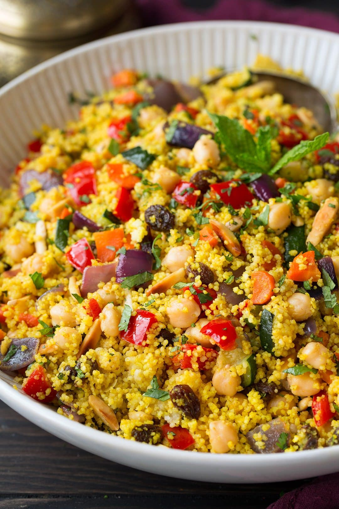

Couscous with Vegetables
Home

Description
This is a delicious and healthy dish made with fluffy couscous and a variety of fresh vegetables. It's perfect for a quick weeknight dinner or a light meal on the weekend.
Ingredients
- 1 cup couscous
- 2 cups vegetable broth
- 1 cup mixed vegetables (carrots, bell peppers, zucchini)
- 2 tablespoons olive oil
- 1 clove garlic, minced
- Salt and pepper to taste
Steps
- Heat the vegetable broth in a saucepan until it reaches a boil.
- Add the couscous to the boiling broth and remove from heat.
- Let it sit for 5 minutes, then fluff with a fork.
- In a large skillet, heat the olive oil over medium heat.
- Add the minced garlic and sauté for 30 seconds.
- Add the mixed vegetables and cook until tender.
- Season with salt and pepper to taste.
- Serve the couscous alongside the vegetable mixture.